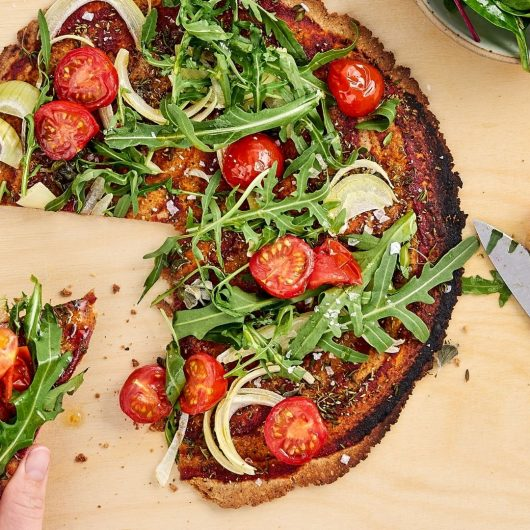

PIZZA

SPECIES-APPROPRIATE PIZZA
The pizza is free of preservatives and only made with fresh ingredients.
It's gluten-free, vegan and tasty!
INGREDIENTS
- Chestnuts flour
- Olive oil
- Water
- Tomato sauce
- Arugula
- Onions
- Cherry tomatoes
- Eggs
- Salt & Pepper
STEPS
- Preheat the oven to 200 degree celsius upper and lower heat.
- Mix the chestnuts flour with olive oil. Add some water from time to time. Mix until the dough feels ready.
- Roll the dough between two baking papers. Put some tomato sauce and onions on it.
- When the dough is light brown put out and serve with arugula tomatoes.
- While the dough is in the oven fry the eggs and put them on when done.